Manual
How OP-8 works, from the first minute. Twenty-three recipes you can follow with the unit in front of you, and then every button.
The unit, part by part
Every part of the Maschine MK3 has a number here, and the manual calls it by that name: "button 5", "knob 7", "pad 12", "group G".
- 1Screen buttons 1–8Eight buttons above the two screens, numbered left to right. They change the page of the screen below them; each screen names its buttons along its top edge. Written "button 5" in this manual.
- 2The two screensThe left one is time: the steps, the tempo, the chord. The right one is sound: the instrument of the selected track.
- 3Knobs 1–8Under the screens, in the colour of the dial they move on screen. Knobs 1–4 belong to the left screen, 5–8 to the right one. Touch one without turning it and its value appears.
- 4Pads 1–16Sixteen pads, numbered in reading order: pad 1 is the top left, pad 16 the bottom right. They are the steps, a keyboard, the chords of the Brain, or effects, depending on the mode buttons.
- 5Group buttons A–HEight buttons, four and four: the eight tracks. Press one to choose the track you work on; the screens and pads follow it.
- 6TransportPLAY, STOP, RESTART, REC, TAP, ERASE, SHIFT (the second function of many buttons) and FOLLOW.
- 7Mode buttonsAbove the pads: STEP, CHORDS, KEYBOARD, PAD MODE and FIXED VEL. They decide what the pads are.
- 8Main-mode buttonsThe block at the top left: CHANNEL (composing), PLUG-IN, BROWSER, SAMPLING, FILE, SETTINGS, MIXER (recipe 23) and the ones still to come (ARRANGER, AUTO, MACRO, PAGE). Several take both screens.
- 9The 4D encoderThe wheel that moves you around: turn it to move the ring (the focus) from one thing to the next on the screens, its arrows to move across, and push it to choose what the ring is on. Hold TEMPO, SWING or VOLUME and turn it to change those. Recipe 18.
- 10The Smart StripTouch it for the master filter: the left half closes it, the right half thins it.
- 11Volume, swing and tempoVOLUME, SWING and TEMPO: hold one and turn the 4D encoder. Hold VOLUME and turn the knobs for the mix of each track (recipe 19). NOTE REPEAT and LOCK are here too.
- 12Beside the padsSCENE, PATTERN, EVENTS, VARIATION, DUPLICATE, SELECT, SOLO and MUTE (hold it and press a group to mute that track).
- 13Under the screens, leftPITCH, MOD, PERFORM (live effects on the pads) and NOTES.
What OP-8 is
A groovebox that lives in a Maschine MK3.
You make music with eight tracks. Each track has a row of up to sixteen steps (the sixteen pads), and an instrument that makes its sound: drums, a kick, a bass, strings and bells, a synthesiser, or an outside synth through the MIDI cable. You tap steps to say when something plays and turn knobs to say how it sounds. Press PLAY and it plays.
Three things make it different from a drum machine, and the recipes below use all of them:
- Every track has its own length. A bar of seven steps against a bar of sixteen drifts apart and comes back together by itself. Nobody has to program the variation.
- A step can be more than a note. Hold a pad and you can make a step repeat, play only sometimes, play every second time, or play late. These are step components.
- The Brain knows chords. Tracks connected to it follow a chord progression, so a bass line you wrote in one key plays in tune with the harmony, bar after bar.
No MK3 in front of you? op8 sim runs the whole machine without hardware, and twin/op8-twin.html is a version you can click in the browser. The pictures in this manual are the real screens, taken from the simulator while it followed these same recipes.
Five facts to find everything
Two screens, sixteen pads, eight knobs. With the map above in mind, these five facts are all you need.


- The left screen is time, the right screen is sound. Under the left screen are knobs 1–4 and under the right one knobs 5–8. Each screen names what its four knobs do right above them, in the colour of the knob. Touch a knob (do not turn it) and a big label shows what it is and its value.
- The eight buttons above the screens change the page. Their names appear in the capsules along the top edge of each screen: step, components, players, bar on the left and sound, shape, fx, mod on the right (buttons 5 to 8). Choosing a track always puts you on its first pages: button 1 on the left and button 5 on the right. The open page is the bright one. A button with no name does nothing in that context.
- The pads are the steps. Step 1 is the top-left pad, step 16 the bottom-right: they read like a page. A pad in the track's colour is a step that plays, a dim white one is an empty step, a bright white one is where the playhead is, and a dark one is past the end of the track.
- The eight group buttons A–H are the eight tracks. Press one to choose the track you are working on: the pads, the left screen and the right screen all follow it.
- The mode buttons change what the pads are. STEP (steps, the default), KEYBOARD (a keyboard), PAD MODE (the sounds of the instrument), CHORDS (the chord progression) and PERFORM (live effects). Press the button of the mode you are in, or STEP, and you are back at the steps.
Every button follows one light rule: dark means it does nothing right now, a very faint white means it can be pressed, and a strong white means it is on, pressed, or the mode you are in. If you are lost, look for the strong lights.
Starting it
On a Mac, plug the MK3 in directly (a hub can starve its screens of power), close Native Instruments' own software, and run scripts/run.sh (or just op8, if you set that alias up). On the Raspberry Pi 5 it starts by itself when the unit is powered. The sound comes out of the MK3's own audio outputs.
OP-8 starts with a small demo already in it: a drum beat, a kick, a bass, a plucked line, a MIDI arpeggio and a synth line. It is there so there is always something to listen to and take apart.
Eight pieces to listen to
Before you build anything, hear what it can do. Press FILE, tap one of the top two rows of pads, and press PLAY. Each is short and in a different style; turn knobs, mute tracks and take it apart.
| Piece | Listen for |
|---|
They use every instrument with its presets, the track effects, the LFO, the chord Brain and the step components. To keep one you changed, save it in a place of your own (recipe 12).
Your first ten minutes
No rules, only things to press.
- Press PLAY. The demo plays, and the pad lights run along the steps. Press PLAY again to pause, and STOP to stop. RESTART goes back to step 1 and keeps playing.
- Press the group buttons A to H one after another. Each track has its own colour and its own instrument, in the order of PLUG-IN: drums, kick, bass, strings and bells, sampler, granular (recipe 20), synth, and last the MIDI out. The right screen changes with it.
- Hold MUTE and press a group button: that track goes quiet. Do it again to bring it back. Mute everything except the bass and the kick and you have the skeleton of the piece.
- Turn knobs 5–8 while the demo plays. The right screen names what each one does, and the picture changes with the sound. This is the main way to shape a sound.
- Hold TEMPO and turn the 4D encoder (the big knob in the corner): the tempo changes, and the left screen shows it in large numbers while you hold the button.
- Press FILE. The sixteen pads are sixteen places for projects: the top two rows are eight that come with OP-8, the bottom two rows are yours. Tap one of the top row to load it. Press FILE again to leave. Whatever you do, you can always come back to the demo this way.
There is no undo yet. If you are about to try something bold, save first: FILE, then SHIFT and a pad of the bottom two rows (recipe 12).
Recipes
Each one starts from a known place and ends with something you can hear. They are the way to learn the machine, and each one is also an automated test: if a recipe stops working, the build fails.
Counting steps: pads read like a page, so step 5 is the first pad of the second row, step 9 the first pad of the third, and so on. A turn of a knob has about twenty-five small clicks; "a notch" below is one click.
1 LISTEN AND TAKE IT APART
Hear what the machine does and learn to mute and choose tracks.
- Press PLAY.
- Hold MUTE and press group B. The kick drops out (its group light goes dark).
- Press group D (no MUTE). The right screen now shows the resonator, the instrument that plays the plucked line. Turn knob 7 and listen.
- Press STOP.
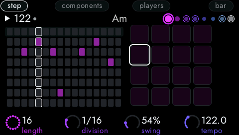
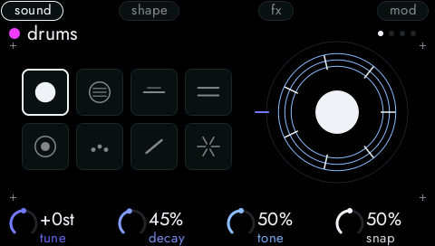
Try next: hold SHIFT and press a group button to disconnect that track from the Brain (recipe 3 explains it). The track stops following the chords.
2 BUILD A DRUM BEAT
Kick, snare and hi-hat on one track, using the drum machine's eight lanes.
Track A is a kit: one track with eight sounds (kick, snare, closed hat, open hat, tom, clap, rim, crash). Instead of one note per step, every step can have any of the eight sounds switched on.
- Start from an empty project: FILE, then tap any empty place of yours in the bottom two rows. It opens a new project with the standard instruments and nothing in the steps.
- Press group A. The right screen shows drums, with a kick (the first sound) chosen.
- Tap steps 1, 5, 9 and 13 (the left column of pads). Each tap sounds the kick and lights the pad.
- Press screen button 6 (shape). Turn knob 8, sound, a tenth of a turn: the display switches to the snare, and you hear it as you turn. Tap steps 5 and 13.
- Turn knob 8 another tenth: the closed hat. Tap steps 3, 7, 11 and 15.
- Press PLAY. A beat. Tap a pad that is lit while a sound is chosen and only that sound goes off in that step; the others stay.
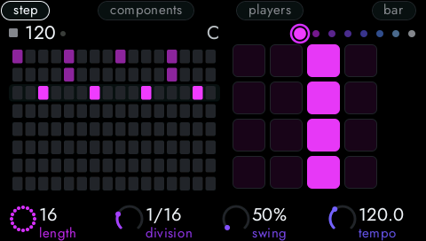
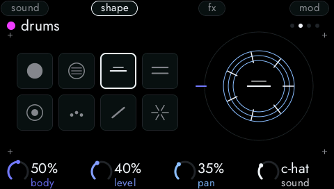
Try next: with the hat chosen, turn knobs 5–8 on the sound page (5): tune, decay, tone and snap. Each sound keeps its own settings. Hold a step's pad to give it a ratchet (recipe 5) for a hat roll.
3 A BASS THAT FOLLOWS THE CHORDS
Write a four-note bass line and let the Brain keep it in tune with a chord progression.
The Brain is a chord progression that every connected track follows. Out of the box it plays I – vi – IV – V in C major, one chord a bar. A connected track plays the notes you wrote, moved to fit the chord that is sounding.
- Press group C (the FmBass). Tap steps 1, 4, 7 and 11.
- Hold SHIFT and press group C: the track is now connected to the Brain (do it again to disconnect).
- To give a step its own note, keep a finger on its pad, here step 4. The left screen switches to that step. With your other hand turn knob 1, note: each notch is a semitone, and you hear the note as you turn. Lift your finger and it closes.
- Press CHORDS. The pads are now the chords of the key. Turn knob 1 two notches: the key becomes D. Knob 2 chooses the scale (major, minor, dorian…), knob 3 how tracks follow the chord, knob 4 how many chords the progression has.
- Press CHORDS again to go back to the steps, then PLAY. Every bar the chord changes and the bass moves with it.

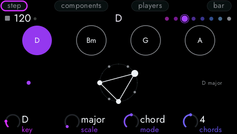
In CHORDS mode the pads are chords: hold one and you hear it (on the track you have selected), and the Brain plays that chord for as long as you hold it. Let go and the progression takes over again. Knob 3 chooses how a connected track follows: chord (the default) snaps each note to the nearest note of the chord, scale snaps it to the key's scale, transpose only moves it by the root.
Try next: connect two tracks, say the bass and the resonator, and write different notes on each: they will always agree with each other.
4 PLAY A MELODY AND RECORD IT
Play by hand and let OP-8 write down what you played.
- Press group G (the macro synth).
- Press KEYBOARD. The pads become a chromatic keyboard starting at C3, with every C brighter. Play it: the pads play the selected track's instrument while you hold them, and hit harder for a louder note. The 4D encoder, pushed left and right, moves the whole keyboard an octave. (On the drums there is no keyboard to climb: KEYBOARD is the same as PAD MODE, the eight sounds on the pads.)
- Press REC (it lights red) and then PLAY.
- Play pads in time. Each note you play is written on the step you were closest to, with the velocity you played it at.
- Press KEYBOARD again to go back to the steps. They are now lit where you played. Press REC again to disarm it.

PAD MODE is the same idea for sound instead of pitch: on the drum kit, pads 1 to 8 are the eight drum sounds (pad 1 is the bottom-left one), and on any other instrument the pads climb the key's scale. With REC armed, hitting drum pads writes into the right lane, and several sounds can share a step.
If you want every note at the same strength, turn FIXED VEL on: pads and recording use velocity 100 whatever the hit.
Try next: on the bar page (recipe 9), knob 4, rec rounds, chooses how a note is placed: on the nearest step, on the step down that is sounding, or on the up next one.
5 MAKE A STEP SPECIAL
Turn an ordinary step into a roll, a maybe, or an every-other-time.
- Press group B and tap step 1 (the kick).
- Hold its pad. After a moment the left screen shows the step's components.
- With the pad still held, turn knob 4, component one notch: ratchet ×2, the step plays twice. One more notch: ratchet ×3. Turning it replaces the choice, and the list is: ratchets ×2–4, chance 75/50/25 %, every 1:2, 2:2, 1:4, 4:4, velocity −40 and +20, transpose +7 and −5, octave +1 and −1, hold, delay, random note, and back to none.
- Let go of the pad and press PLAY: the kick now rolls on the first step.

| Component | What the step does |
|---|---|
| ratchet ×n | Plays n times inside its step: rolls and flams. |
| chance n% | Plays only some of the time: n times out of a hundred. Great for hats and ghost notes. |
| every n:m | Plays only on pass n of every m passes of the loop: 1:2 on the first of every two loops, 4:4 on every fourth. |
| velocity | Makes this step softer (−40) or louder (+20) than the others. |
| transpose / octave | Moves this step by seven semitones up, five down, or an octave up or down. |
| hold | Makes the note last one step longer. |
| delay | Plays the step a little late, off the grid. |
| random note | Plays a random note up to an octave above the written one, different each time. |
Components stack: put two on a step and they combine (a ratchet of 2 and a ratchet of 3 give six hits). Keep the pad held, move the cursor with the 4D encoder, and turn knob 4 to add a second one. A step holds up to six.
Try next: chance 50 % on the closed hat of the beat from recipe 2 for a hat line that never plays the same way twice.
6 ONE NOTE BECOMES A CHORD OR AN ARPEGGIO
Write one note per step and let the track play a whole chord, or run through it.
- Press group D (the resonator) and tap step 1.
- Press screen button 3 (players). A piano keyboard appears.
- Turn knob 1, play one notch to chord, and knob 2, chord one notch to minor. The keys of the chord light up on the left screen. Press PLAY: step 1 plays three notes together.
- Turn knob 1 once more for up, an arpeggio. Now the step plays the chord one note after another, and a white key walks through them on the screen. Knob 3, rate, chooses how many notes fit in the step (2, 3, 4, 6 or 8).
- Press 3 again to go back to the steps.

| Knob | What it does |
|---|---|
| 1 · play | off (each step plays its note), chord, or an arpeggio: up, down, up-down, random. |
| 2 · chord | major, minor, 7th, m7, sus2, sus4, power. |
| 3 · rate or strum | For an arpeggio, notes per step. For a chord, how much the notes are spread out like a strummed guitar: 0 plays them together. |
| 4 · octaves | 1 to 3: stacks the chord over more octaves. |
The players work on the note of each step, so a step with a transpose or a Brain connection plays the chord of that note. They do not apply to the drum kit.
7 GIVE A TRACK AN ECHO OR A ROOM
Add an effect to one track, and only that track.
- Press group D, and PLAY the plucked line.
- Press screen button 7 (fx). The right screen shows the effect of this track, now off.
- Turn knob 5, type two notches to reverb: rings spread out from a point. Knob 6 is the size of the room, 7 its tone, 8 the mix: turn the mix up until you hear it.
- Turn knob 5 one notch back for the delay: you see a note followed by echoes. Knob 6 is the time between echoes, 7 the feedback (how many there are), 8 the mix.
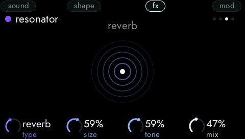
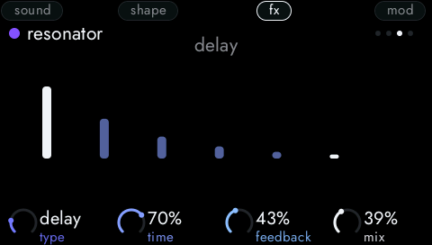
| Effect | Its three knobs | What it is for |
|---|---|---|
| delay | time · feedback · mix | Echoes that bounce from left to right. |
| reverb | size · tone · mix | A small room. Tone darkens the tail. |
| chorus | rate · depth · mix | Thickens and widens a sound. |
| filter | sweep · resonance · mix | One knob from a closed low-pass (dark), through open, to a high-pass (thin). |
| drive | drive · tone · mix | Warm saturation up to a harsh distortion. |
Each track has its own effect, kept with the project. To take it off, turn knob 5 back to off. The PERFORM effects of recipe 10 are different: they are played live on everything at once and are not kept.
8 MAKE A KNOB MOVE BY ITSELF
Let a slow wave turn one of the instrument's knobs, or the track's volume, for you.
- Press group C (the bass) and PLAY.
- Press screen button 8 (mod). The right screen says moves nothing: an LFO (a wave that runs forever) does nothing until you tell it what to move.
- Turn knob 8, moves three notches. The first notch is volume; after that come the instrument's own knobs in the order the screen shows them, so the second notch is ratio and the third is index, the FM depth of this bass. The tone now opens and closes by itself.
- Knob 7, depth, is how far it swings around the value you left the knob at. Knob 6, rate, is how fast (from one cycle in twenty seconds to twenty a second). Knob 5, shape, is the wave: sine, triangle, square, saw or random (a new random value every cycle).
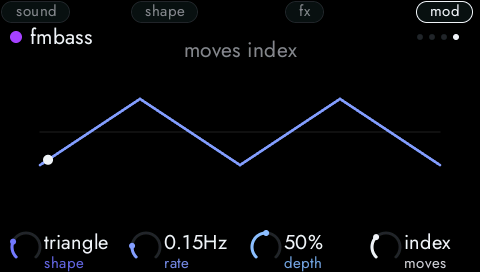
Turn the knob you are moving by hand and it becomes the middle of the swing: you still decide where the sound sits, and the LFO moves it around that. On volume it is a tremolo, a rhythmic dip that never gets louder than the track's level. Turn moves back to nothing and the knob returns to where you left it.
Try next: shape square, volume, a fast rate: a chopped, gated sound.
9 TWO LENGTHS THAT DRIFT APART
Give two tracks different lengths so that the music never repeats the same way.
- On tracks B and C, tap step 1.
- On C, press screen button 4 (bar). Turn knob 1, length, left until it says 7.
- Press 4 again and PLAY. The kick comes back every sixteen steps, the bass every seven: they meet again after 112 steps. The polymeter rings on the left screen show each track going round at its own pace.
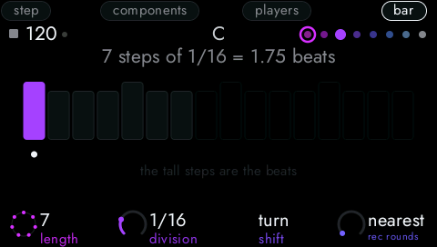
| Knob | What it does |
|---|---|
| 1 · length | How many steps the track has, 1 to 16. |
| 2 · division | How long a step is: a 1/32, a 1/16 triplet, a 1/16, a 1/8 or a 1/4 note. Tracks can have different divisions too. |
| 3 · shift | Turns the pattern round inside its length: each notch moves everything one step later (or earlier) and wraps what falls off the end to the start. |
| 4 · rec rounds | Where recording puts a note (recipe 4). |
Try next: shift a rhythm one notch to turn the whole pattern into a syncopation without changing any step.
10 PERFORM LIVE
Play effects on the whole mix, with your hands, while it plays.
- Press PLAY, then PERFORM. Every pad is an effect, drawn on the left screen.
- Hold the bottom-left pad (lpf, a low-pass filter). The harder you press, the darker the whole mix. Let go and it is gone.
- Try the others. The bottom row: low-pass, high-pass, crush, down-sample. Second row: two gates, a tape stop, and kill, which cuts everything. Third row: repeat loops the last slice of the music (a quarter, an eighth, a sixteenth, a thirty-second). Top row: a triplet repeat, two audio stutters, and an echo.
- Slide a finger along the Smart Strip (the touch strip) for a filter on everything: one half of the strip darkens the sound, the other half thins it out, and the middle does nothing.
- No fingers free? Turn the 4D encoder: a frame moves over the sixteen effects. Push to start one and keep it going, turn to change how strong it is (it starts at half), and push again to stop it. The arrows move the frame to another effect without stopping the one that sounds, and pushing that one swaps it in.
- Press PERFORM again to go back to the steps. Any effect that is still going stops.

Try next: in a quiet moment, hold a repeat and release it on the downbeat. That is the classic build-up.
11 CHOOSE AN INSTRUMENT
Put a different instrument on a track.
- Press group F (it has the granular; any track can take any instrument).
- Press PLUG-IN. Both screens show sixteen places. The top two rows are the eight instruments that come with OP-8, from the most guttural to the most refined: drums, KickSyn, FmBass, resonator on the first row; sampler, granular, macro and, last, midi out on the second. The tracks follow the same order: A is the drums and H the MIDI out. The two bottom rows are places for instruments you will install later. The instrument this track has is outlined.
- Tap the fourth pad, the resonator. It takes the place of the granular on track F (you can bring the granular back the same way), and the screens go back to composing.
- Press 5 (sound) and 6 (shape) to move between the instrument's two pages of four knobs.
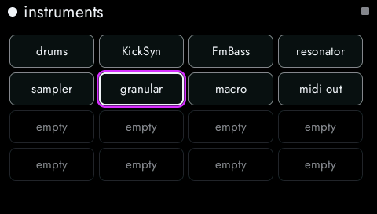

The midi out is one bridge that sends a track out of the MK3's MIDI socket to an outside synth, so there is only one at a time (it starts on track H): choosing it moves it from the track that had it. If you leave the drums for another instrument, the drum lanes turn back into ordinary notes and the pattern stays.
Try next: put the macro on a track and turn its first knob, engine: it has twenty-four ways of making a sound, from plain waves to bells, voices and drums.
12 SAVE YOUR WORK AND COME BACK
Keep a project and open it tomorrow.
- Press FILE. Sixteen places: eight factory pieces on top (house, boom bap, dub, polyrhythm, acid, electro, ambient, breaks; see listen to them) and eight places of yours below. A tap on an empty place of yours opens a new empty project.
- Hold SHIFT and tap one of the empty bottom places. The right screen says saved in user 1.
- The place now carries a name, the day you saved and the tempo (16 nov 122). Saving again in the same place keeps its name. To give it one of your own, hold SELECT and tap the place: the name screens open. Turn the 4D encoder to choose the letter under the frame (hold SHIFT to go ten at a time), and move the frame with the arrows ◀ ▶ or with the pads of the top three rows, which are the twelve places of the name. The last four pads are clear, delete, insert and save. Push the encoder to keep the name; FILE goes back without changing it. (You can still write the small text file next to the project,
~/.config/op8/projects/user-1.name, by hand.) - To get rid of one: hold ERASE and tap the place. It turns red and says erase?; hold ERASE and tap the same place again and it is gone. Any other tap leaves it as it was. The factory projects and the empty places are never touched.
- Whenever you want it back: FILE, tap that place. The project, the instruments and every knob come back as you left them, and the screens go back to composing.
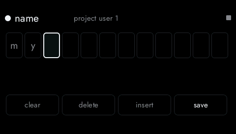
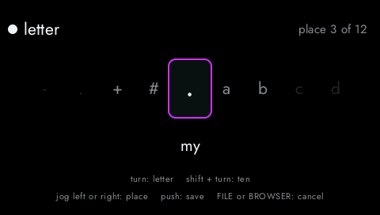
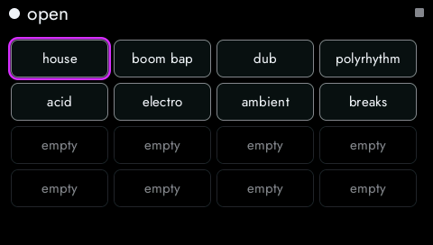
The projects live in ~/.config/op8/projects/ (one file each), so you can back them up or move them to another unit. The factory projects can be opened but never overwritten. What is saved: the steps and components, the tempo and swing, the chords, each track's instrument with its knobs, its players, its effect and its LFO.
Try next: open acid, press PLAY and open the track's LFO page (button 8) on the bass: the tone that opens and closes by itself is one knob moved by an LFO.
13 TEMPO, SWING, VOLUME AND THE METRONOME
Find the pace by tapping, and loosen the grid.
- Tap TAP four times at the pace you want. The tempo becomes the average of the gaps. A pause of more than two seconds starts the count again.
- Hold TEMPO and turn the 4D encoder to fine-tune it (hold SHIFT too for tenths). The left screen shows it large while you hold.
- Hold SWING and turn the encoder: the even steps arrive late, from straight (50 %) to a heavy shuffle (75 %). It applies to all tracks.
- Hold VOLUME and turn the encoder: the master volume. (Hold it and turn the knobs, and you are at the mixer: recipe 19.)
- Hold SHIFT and press TAP: the metronome. A click on every beat while it plays, higher on the first of each bar. Again to turn it off.

14 CHANGE THE LOOK
Pick a theme.
- Press SETTINGS. Both screens become the settings: a card for each theme on the left, the eight knob colours on the right.
- Turn the 4D encoder (or push it left and right). The theme changes at once, on the screens and on every light of the unit. There are three, in this order: chrome, the one OP-8 starts with and the one this manual is drawn in, is one range from violet to blue; matte is soft and chalky; glossy is bright and saturated.
- The four buttons over the left screen name the pages of settings: theme (this one), audio, midi and light (recipe 22).
- Press CHANNEL (or SETTINGS again) to go back to composing. The theme is remembered the next time you start OP-8.
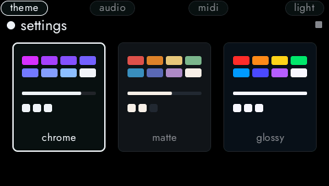
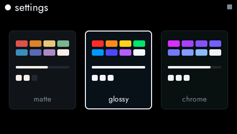
15 PLAY A RECORDED SOUND
Use the sampler: pick a sound, cut the part you want, and play it on the keyboard.
- Press group E: the sampler is there already (it is the fifth instrument in PLUG-IN, between the resonator and the synth, and track E).
- The right screen draws the wave of the sound. Turn knob 5, sample, one click: the next sound (the bell), and you hear it. In order: pluck, bell, pad, voice, thump, sweep, glass, glitch, and then user 1 to user 8, which are your own files (see below).
- Knob 6, start, moves the first mark, in the colour of knob 6: the sound begins later. Knob 7, length, moves the second mark, in the colour of knob 7: it stops sooner. Only the part between the marks is lit and only that part plays. Knob 8, tune, moves it up or down by up to two octaves (+24 or −24 semitones); it is also how you tell the sampler what note a recording was made in: a sound recorded on an E plays in tune on C4 with tune at −4.
- Press 6 (shape) for the second page: attack (how slowly it fades in), release (how long the fade at the end is), loop and level. Turn knob 7, loop, one notch to loop: the lit part now repeats for as long as you hold a key, and fades when you let go. Further on are slices 8, slices 16 and hits (recipe 21).
- Press KEYBOARD and play. The sound plays at its own pitch on C4, which on the default octave is the top-left pad (the bottom-left pad is C3, an octave lower), and it rises and falls with the pad. Up to eight keys at once.

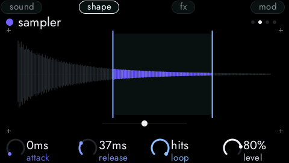
Your own sounds
Put WAV files (any sample rate, 8, 16, 24 or 32 bit, mono or stereo, up to ten seconds) in ~/.config/op8/samples/ and OP-8 finds them the next time you open SAMPLING or PLUG-IN (the line on the screen says how many it loaded; you do not have to restart). The first eight, in the order of their names, are user 1 to user 8, except the ones called rec-1.wav to rec-8.wav, which are what you record yourself (next recipe) and always take their own place. Files that are not sounds are skipped. A user place with nothing in it is silent and the screen draws an empty line.
Try next: put the sampler on a track, tap a few steps, and give each step a different transpose component (recipe 5): one sound, a melody. Or a short glitch with the length knob turned down: a percussive tick.
16 RECORD YOUR OWN SOUND
Record a few seconds of what OP-8 plays, keep the part you like, and play it from the sampler.
- Start a beat (recipe 2) and press PLAY. Then press SAMPLING. Both screens change: on the left sixteen pads, user 1 to user 8 on top and listen below; on the right an empty line with a dot going along it, waiting.
- Press REC. The title says recording, the wave grows and the bar under it shows how loud it is. Press REC again to stop. Ten seconds is the most it keeps. The source is on knob 5: resample records what OP-8 plays (nothing to plug in); input records the audio coming into the interface, a microphone or a synth.
- To start with the sound, not with your finger: hold SHIFT and press REC. The title says waiting for a sound, the dot beats slowly, the bar under the wave shows the level and a small mark on it is the level the sound has to reach (a soft one, −36 dB). The recording starts when something gets past it, and it begins ten milliseconds before, so the start of the sound is not cut. Press REC again to stop it (or, while it waits, to cancel).
- To get ready first: press TAP (it lights) and then REC. The title says get ready and a big 3, 2, 1 goes by at the speed of the project's tempo, with a click on each; the recording starts after the third. REC again while it counts cancels it. TAP again turns the count-in off.
- Cut the take. Knob 6, start, moves the first mark (the colour of knob 6) and knob 7, end, the second (the colour of knob 7); only what is between them is kept. Knob 8, fade, softens both ends so it does not click. Press any of the listen pads to hear the part, as many times as you like. While it plays you can keep turning knobs 6 and 7: the end cuts the sound short and the start jumps ahead, so you hear the cut as you make it.
- When it sounds right, tap one of the pads of the top two rows: the sound is saved in that place (user 1 to user 8) and the screen says so. It is written to
~/.config/op8/samples/asrec-1.wavtorec-8.wav, so it is still there next time. A pad that already has a sound is lit; tapping it again replaces it. To name it, hold SELECT and tap that pad: the name screens open as in recipe 12, and the pad then says what you called it instead of user 3. The name is kept next to the file (rec-3.name). - Press SAMPLING to go back. On a track with the sampler (recipe 15), turn knob 5, sample, to the user place you used: it plays what you recorded, on the keyboard and from the steps, with everything the sampler can do (cut, tune, loop).

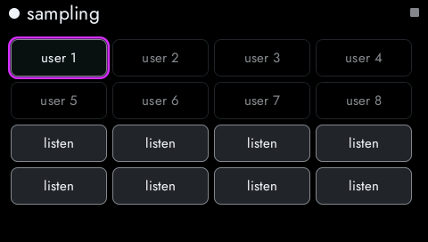
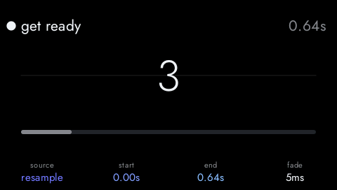
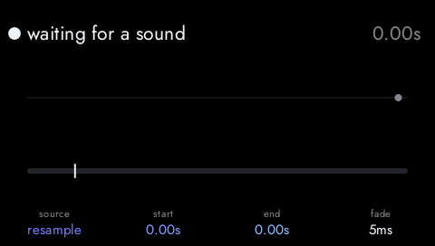
On the unit, input uses the MK3's own input. The first time, the Mac may ask permission to use the microphone. resample needs none of that.
Try next: record one bar of the beat with a bass line, save it, and use it as a loop on another track at half the tempo; or record your voice and play it as a melody on the keyboard.
17 PRESETS: LOAD ONE, KEEP YOUR OWN
Change the sound of an instrument in one tap, and keep the sounds you make.
- Press group B (the kick) and press BROWSER. Both screens show sixteen places for the presets of this instrument; the right screen says which one. The top two rows are the eight presets that come with it, each with its name (for the kick: deep, punch, boom, tight, click, dirty, soft, hard). The bottom two rows, user 1 to user 8, are yours.
- Tap a pad of the top two rows. The knobs of the instrument take the preset's values and you hear a note with the new sound; the line on the right says loaded and its name. Press BROWSER again to go back and play, or tap another preset to compare. Every instrument has its own eight (the list is in the instruments).
- Make your own: go back (BROWSER), turn the knobs of both pages (5 and 6) until it sounds right, press BROWSER, hold SHIFT and tap a pad of the bottom two rows. Every knob of the instrument is saved in that place. It stays on disk, so it is there next time you start OP-8. The presets that come with the instrument cannot be written over.
- Turn the knobs somewhere else, press BROWSER and tap the pad you saved: the knobs return to what you kept.
- A preset you save is named by the day, and you can erase it the same way as a project: hold ERASE and tap the place twice (the presets that come with the instrument are never touched). To rename it, write in the
.namefile next to it inpresets/<instrument>/. - Presets belong to their instrument: the ones you save for the kick are not offered on the bass. A preset of the drums shapes the sound that is chosen and leaves the choice alone. A preset of the sampler also remembers which sound it had and how you cut it. The midi out has none: its knobs are channel, transpose, velocity and cc74.

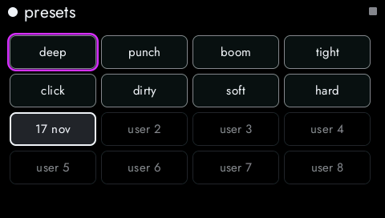
Try next: load boom on the kick and sub on the bass, then the same two on tight and pluck: the whole groove changes character without touching a step. Save two versions of a bass line's sound, one round and one hard, and switch between them while the song plays.
18 MOVE WITHOUT THE PADS: THE FOCUS
Choose and change things with the 4D encoder, on every screen.
- Look at either screen: one thing has a frame round it. That is the focus, and it is always on something. Press FILE: it is on one of the places.
- Turn the 4D encoder (the big wheel next to VOLUME): the frame moves from one thing to the next and wraps round at the end. The arrows ◀ ▲ ▼ ▶ of the wheel move it across, one thing in that direction, from the left screen to the right one and back.
- Push the wheel: it does what tapping that thing does. In FILE the piece opens; in PLUG-IN the instrument goes on the track; in BROWSER a preset loads (and SHIFT and push saves into a place of yours).
- Go back to composing (CHANNEL) and keep turning. The frame visits, in turn, the buttons above the screen (push one and the page changes), the eight tracks (the dots at the top right: push to choose one), the sixteen pads of the grid (push one and its step turns on or off; hold SHIFT and push to open that step, and push again to close it) and the values under each screen.
- A track is a small round dot, so its frame is a circle drawn right on its edge (a little bigger on the track you are on). In PERFORM the frame visits the sixteen effects: push one to keep it going, turn to change its strength, push again to stop it (recipe 10).
- Open the inspector of a step (hold its pad, or SHIFT and push on it): the frame is on the first component. Turn to visit the others and the +; push to grab one and turn to change its kind (a grabbed + adds one); push to let go. The note, velocity and gate under the screen are values like any other. Leave with the step button.
- On the drums the right screen draws the eight sounds as keys: the frame visits them too. Push one to choose it (the same as turning the sound knob): it is played, drawn large, and its knobs and the steps you tap are now its own.
- On a value, push to grab it (the frame turns white and thicker), turn to change the knob under it, push again to let go. An arrow lets go too and moves on.
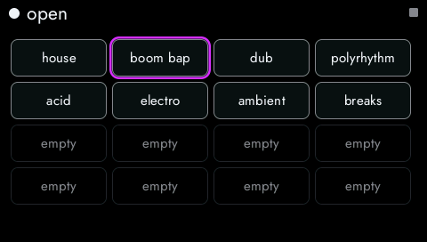
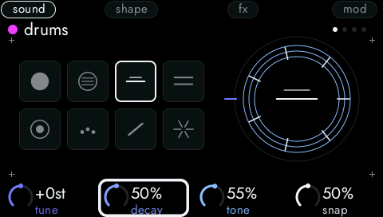
The tempo has its own button. The wheel no longer changes the tempo by itself: hold TEMPO and turn (recipe 13). So turning the wheel never changes your music by accident. With KEYBOARD on, ◀ ▶ stay the octave; the turn and ▲ ▼ move the frame.
Try next: choose a track, a page, a step and a knob without touching a pad or a knob: only the wheel.
19 THE MIX: LEVEL AND PAN OF EACH TRACK
Balance the eight tracks against each other, and place them between the speakers.
- Press PLAY so you can hear what you are doing.
- Hold VOLUME. The left screen turns into the mix: eight faders, one for each track (A to H) in the track's colour, with the pan of each under it. The big number at the top right is the master volume, which the 4D encoder still turns.
- Still holding VOLUME, turn a knob: the eight knobs are the eight faders, left to right across both screens. Knob 1 is track A and knob 8 is track H. Under each screen the four tracks whose knobs are there show their level in numbers.
- Now hold SHIFT as well. The screen says pan, the faders step back, and the same knobs place each track: the marker moves left or right of the centre tick, and the numbers say L (left), C (centre) or R (right).
- Let go of VOLUME: the knobs are the knobs of the instrument again.
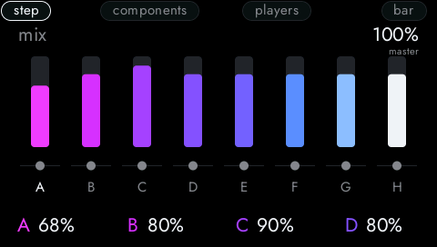
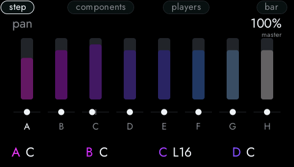
The mix is part of the project. It is saved with it in FILE and comes back when you open it. A new track starts at 80 % and in the centre, so the projects you already have sound as they did. The level never goes above full: if the sum of the tracks is too loud, bring the quieter ones down, or the master. A hard pan sends the track to one speaker only.
Try next: open one of the eight pieces, hold VOLUME and bring the drums down by two notches to hear what the bass does.
20 GRANULAR: A CLOUD FROM A SOUND
Turn a short sound into something that lasts, and move through it while it sounds.
- Press group F: the granular is there already (it is the sixth instrument of PLUG-IN, between the sampler and the synth, and track F; if you put something else on F, tap granular in PLUG-IN to bring it back). The right screen draws the wave of a sound (the pad, to begin with).
- Press KEYBOARD and hold a pad. A cloud starts, and every grain that sounds is drawn as a small bar where it is reading the sound. Hold two or three pads: the grains take their pitch from the keys, in turn.
- Still holding, turn knob 6, position: the line in the colour of knob 6 moves along the wave and the cloud is cut from somewhere else. Knob 7, size, is how long each grain is (the line under the wave, in the colour of knob 7): short grains are a buzz, long ones a smear of the original sound.
- Knob 8, density, does two things. Below the middle the grains come at regular intervals and the further left, the more of them; above the middle they come by chance, and the further right, the more of them. In the middle, a small dead zone, only the one grain that each key starts is heard: a sound that is cut and pitched, like a sampler.
- Press 6 (shape) for the second page. Tune moves every grain up or down. Texture is the window of each grain: low, it opens fast and stays open (a sharp, clicky grain); high, it swells and fades smoothly. Spread scatters the grains between the speakers: the bars on the screen sit higher or lower as they do. Level is the volume.
- Press BROWSER: eight presets (cloud, dust, freeze, shimmer, glitch, rumble, bells, swarm). Tap one and play.
- To play it from the steps, tap a step and open its inspector (hold the pad): a long gate keeps the cloud going for as long as the note is held.
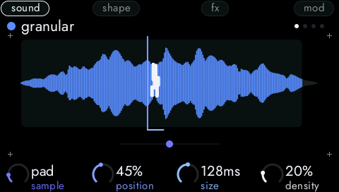
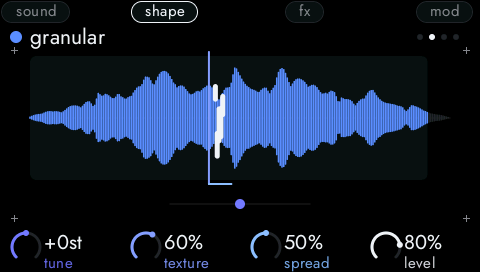
Your own sound as a cloud. The granular and the sampler share the same sixteen sounds. Record something with SAMPLING (recipe 16) and save it in one of your places: on a track with the granular, turn knob 5, sample, to that user place, and the cloud is made of it. A sound of a second or two is best: the grains never run past its end.
Try next: the freeze preset on the voice, then slowly turn position while you hold a key: you walk through the word without it ever moving on by itself.
21 SLICES: A KIT MADE OF A SOUND
Cut a sound into equal parts and play each one from a pad or a step.
- Press group E (the sampler) and choose a sound with a beat in it: record a bar of the demo with SAMPLING (recipe 16) and save it, or use the glitch, which has four hits.
- Press 6 (shape) and turn knob 7, loop, to slices 8 (the third of the five names of the knob: one shot, loop, slices 8, slices 16, hits). The wave now has seven ticks across it: the part between start and length, cut into eight equal parts.
- Press KEYBOARD and tap the pads. The bottom-left pad (C3) is the first slice, the next pad the second, and so on; with eight slices the pads above the eighth go round to the first again. With slices 16 every pad is its own slice.
- A slice always plays at its own pitch, whatever the pad (tune moves them all together), and it plays through and fades over release.
- Tap steps and give each one a note in the inspector (recipe 5): a step chooses a slice the way a pad does (C3 is the first). Turn start and length to slice only the part of the sound you want.
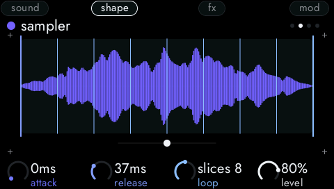
- Cut where the sound hits. Turn knob 7, loop, on to hits. Instead of equal parts, OP-8 looks for the places where the sound hits (a drum, a note that starts) and cuts there: a tick appears at each hit and a slice runs from one hit to the next. The first pad (C3) is the first hit, the next pad the next one, and the pads go round after the last. It finds up to sixteen, at least 60 ms apart, and what comes before the first hit is not a slice. A sound with no hits (a held tone, a pad) is one slice. Start and length still choose the part that is cut.
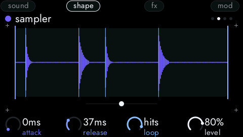
Try next: record a drum loop from the demo, slice it in 16, and play the slices from the steps of another track in a new order.
22 SETTINGS: AUDIO, MIDI AND LIGHT
Choose where the sound goes, which MIDI port plays, and how bright the unit is, without restarting.
- Press SETTINGS. The four buttons over the left screen are its pages. Press 2 (audio): the left screen lists the outputs, the first being automatic (the MK3's own if it is there, else the system's); the one that is open says in use. The right screen lists the inputs (what SAMPLING listens to) and the size of the audio block.
- Turn the 4D encoder: the frame goes down the outputs, then to the inputs and the block. Push to choose. A new output opens at once (there is a moment of silence while it does) and is remembered for the next time. If it cannot be opened the line at the bottom says so and OP-8 keeps the automatic one: the machine is never left without sound.
- Audio block: 64, 128 or 256 frames. A smaller block answers faster and asks more of the machine; 128 is a good start, and on a Raspberry Pi 5 you can try 64. If you hear clicks, go up.
- Press 3 (midi): the ports that can play a synth outside, one to a row. Push one to use it. play a note sends a short middle C on channel 1, to hear whether what you plugged in answers; silence all stops any note that is stuck. On the right screen you choose the MIDI input: a keyboard or a controller you plug in. off is the first row and nothing is listened to until you choose one. A note you play on it sounds on the selected track, for as long as you hold it, and REC writes it into the steps like the pads. Press in: selected to change it to in: by channel: then MIDI channels 1 to 8 play the tracks A to H, whichever is selected, so a keyboard with several zones can play several instruments. The controllers 7 (volume), 10 (pan) and 91 (reverb) of the keyboard set the level, the pan and the reverb send of that track. clock out (on to begin with) sends the MIDI clock out of the same port while OP-8 plays: a start when it starts, 24 clocks for every quarter note at the tempo of the project, and a stop when it stops, so a drum machine or a synth with an arpeggiator that follows an outside clock keeps time with OP-8. Push it to turn it off.
- More from the keyboard. A program change (0 to 7) puts one of the eight instruments of PLUG-IN on the track that plays; the pitch wheel bends what plays by two semitones either way (the drums have no pitch to bend, and a note that is already sounding in the sampler keeps its pitch). clock in: off becomes clock in: on when you push it: from then on the tempo is the one of the clock that comes in (it takes about half a beat to find it), a start from the outside plays the project from the top, a continue goes on from the place a song position message gave, and a stop stops it. OP-8 keeps in step with the pulses (it speeds up or slows down a little if it drifts, and jumps if it is half a beat off). Do not turn clock in on with the same device that clock out sends to: it would follow itself.
- Teach it a controller. Push learn: it says turn a knob. Turn one of the four knobs under the right screen: which parameter it is depends on the page of the instrument you last had open on that screen, the first or the second (the effect and LFO pages have no parameters to teach). It says move a control: move any knob or slider of your controller. From then on that controller turns that parameter of the instrument of the track that plays (0 to 127 is the whole knob), and it wins over the volume, pan and reverb controllers if you chose one of those. forget takes them all away. They are kept in the settings (
midi_map=). - Press 4 (light): four steps for the screen (25, 50, 75 and 100 %) and three levels for the pads. They are a share of what the USB supply allows, so 100 % is never brighter than the unit can take: a backlight that is too bright resets a MK3 that is fed too little (behind a hub, for example). It changes while you choose.
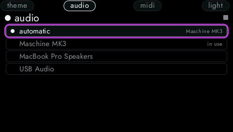
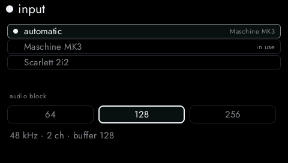
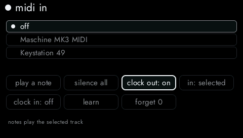
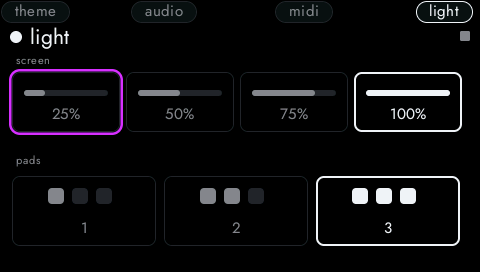
All of this is kept in ~/.config/op8/settings, a few lines of text: audio_out=, audio_in=, midi_out=, midi_in=, midi_channels=, midi_clock=, midi_clock_in=, midi_map=, buffer=, screen= and pads= (only what is not the default). The environment variables of the command line (OP8_AUDIO_DEVICE and the like) win over it.
Try next: plug a second sound card in and choose it as the output; or turn the screen down to 50 % and the pads to 2 for a dark room.
23 THE MIXER, SENDS, COMPRESSOR AND EQ
Set the level and pan of every track in one place, send some of it to a delay and a reverb, glue the whole mix together with a compressor on the master, and shape its tone with an EQ.
- Press MIXER (it lights). The left screen shows four channels, one in each of the columns of the knobs under it: the letter of the track in its colour, a fader that shows its level, a small line with a dot for its pan, and the level as a percentage. The buttons 1 and 2 choose which four: a–d or e–h.
- Turn the knobs 1 to 4: they are the levels of the four channels you see. Hold SHIFT and the numbers under the screen say pan and the knobs turn the pans. (Holding VOLUME still gives you all eight tracks at once, recipe 19.)
- Sends. Press 3 (delay): it lights, the faders now show how much of each channel goes to the delay (in white, not in the colour of the track), and the knobs turn that amount. 4 (reverb) is the same for the reverb. Press the lit button again to go back to the levels. A send is taken after the level and the pan, so a track you turn down sends less. Hold SHIFT and the knobs are still the pans.
- The right screen is the compressor of the master, the last thing the sound goes through before the volume. It does nothing to begin with. The picture is a curve: what goes in across, what comes out up, with the straight line of a sound that is left alone behind it. A mark under the curve is the threshold, a dot on the curve is where the sound is right now, and the bar on the right says how many decibels it is being brought down.
- Turn knob 5, threshold, down: the curve bends at that level, and everything louder is held back. Knob 6, ratio, is how hard (2:1 is gentle, 10:1 and more is a limiter). Knob 7, attack, is how fast it takes hold (a slow one lets the hit of a drum through), and knob 8, release, how fast it lets go.
- Press 6 (output) for the other page: make-up gives back the level the compressor took (up to +24 dB), and mix blends the compressed sound with the original: half and half is the parallel compression that keeps the punch. Knob 7, side-chain, says what the compressor listens to: the mix (as it was) or track A to track H. With a track chosen, it is that track's sound that decides when the whole mix comes down: put the kick there, and every time it hits the rest ducks out of its way and comes back after.
- Press 7 (eq) for the EQ of the master, which comes before the compressor. The screen is its curve: pitch across, from low on the left to high on the right (the lines are 100 Hz, 1 kHz and 10 kHz), and how much it lifts or cuts up and down (the middle line is nothing). Knob 5, low, lifts or cuts the bass; knob 8, high, the treble; knob 6, mid, a band in the middle, and knob 7, freq, moves that band from 200 Hz up to 5 kHz so you can pick the part of the sound it works on. Each goes 15 dB either way. It is flat to begin with and does nothing until you move a knob.
- Press 8 (sends) for the two effects the sends go to. On the left the delay is drawn as the echoes it makes: knob 5, time, is a note value of the tempo (a sixteenth up to a half note), so the echoes always fall in time, and knob 6, feedback, is how many come back (each echo goes to the other speaker). On the right the reverb is drawn as the way it dies away: knob 7, size, is how big the room is (how long it rings) and knob 8, tone, how bright (low: the highs die first). Nothing is heard until a channel sends something. Press 8 again for taps (the button says so): for each effect, where the send is taken from. After the fader (the usual) means a track you turn down sends less; before the fader means the send does not depend on the level, so you can turn a track all the way down and still hear it only in the echo or the room. The drawing is the path of the track to the mix with the line that leaves it before or after the fader. Press 8 once more to go back to the effects.
- The 4D encoder reaches the same things: turn it to put the frame on a value, push to grab it, turn to change it, push to let go. MIXER again goes back to composing. The compressor and the EQ are saved with the project.
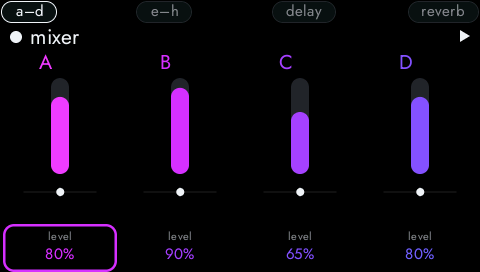
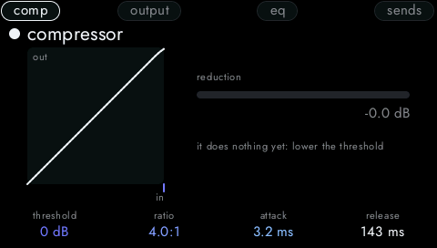
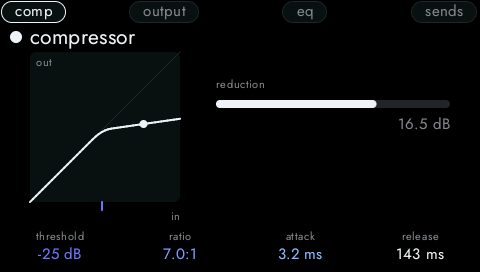
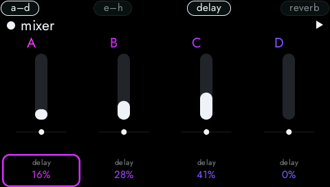
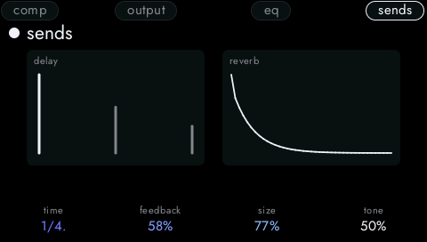
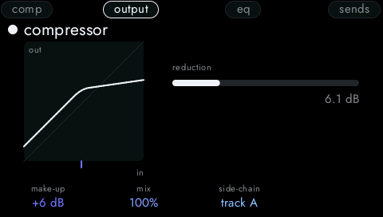
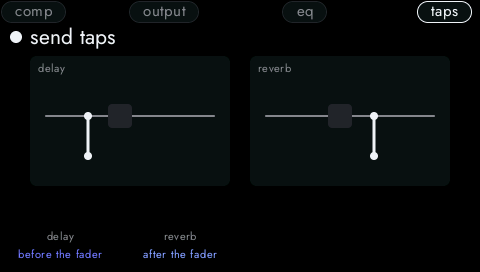
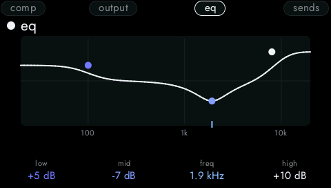
Try next: play the demo, put the threshold at about −20 dB with a ratio of 4:1 and a slow attack, add a little make-up, and press MIXER to compare; then put the mix at half.
The ideas behind it
Short, so you can keep them in your head.
Tracks, steps and the playhead
There are eight tracks (A to H). A track has up to sixteen steps and its own length, its own division and its own instrument. The playhead of each track runs on its own, but all of them follow one clock, so nothing ever drifts: a track of three steps and one of four line up again after exactly twelve. The rings on the left screen are the tracks seen as circles: each ring is one track, and the selected one is in front.
Notes, velocity and gate
A step has a note, a velocity (how hard it is hit) and a gate (how much of the step the note lasts, as a percentage). Hold a pad and the left knobs show them: note, velocity, gate, component. You hear the note as you turn it.
The Brain
A key, a scale and a progression of up to eight chords, one bar each. A track connected to the Brain (SHIFT + its group button) plays its notes moved to fit the current chord. The pads of CHORDS are the chords of the key: pads 1 to 7 (bottom-left first) are its seven triads, pad 8 a sus4, pads 9 to 15 the seven seventh chords and pad 16 a sus2. Hold one to hear it on the selected track and to make the Brain play it for as long as you hold.
Parameters have two pages and a name
An instrument has at most eight knobs: four on the sound page (5) and four on the shape page (6). When an instrument has only one page, shape is not shown. Every instrument draws a picture on the right screen that shows what the knobs do, in the same colour as the knob. Turn a knob and, after a moment's stillness, you hear one note that shows the result.
Light and colour
Each track has a colour, the same on the group button, the pads, the dot on the screen and the track's ring. The eight knobs have eight colours, the same on every screen: the colour of a knob is its label, its dial and, in the instrument's picture, the thing that knob moves.
The instruments
Eight come with OP-8. All of them sound good with any knob anywhere, and each has a picture.
| Instrument | What it is | Its knobs |
|---|---|---|
| drums | Eight percussion sounds on one track, in eight lanes. Programmed by choosing a sound on the right and tapping its steps. | tune · decay · tone · snap / body · level · pan · sound |
| KickSyn | A synthetic kick drum. | tune · decay · punch · drive / click · p.decay · vel · level |
| FmBass | A two-operator FM bass: round, growling, metallic. | ratio · index · decay · release / glide · sub · sustain · level |
| resonator | A plucked string or a struck bell. Four notes ring at once. | type · structure · bright · damping / decay · color · spread · level |
| sampler | Plays recorded sounds. Eight come with it (pluck, bell, pad, voice, thump, sweep, glass, glitch) and eight places are for your own sounds: record them with SAMPLING (recipe 16), or drop WAV files in ~/.config/op8/samples/, even while OP-8 runs, and they appear as user 1, 2… in the order of their names. A note plays the sound at its own pitch for C4 and higher or lower for other notes. One shot plays through; loop repeats the part between start and length while the note is held; slices cut that part into 8 or 16 and give each note a slice (recipe 21). | sample · start · length · tune / attack · release · loop · level |
| granular | Plays a sound as a cloud of tiny grains: textures, pads, drifting sounds. It uses the same sixteen sounds as the sampler, and what you record with SAMPLING can be its sound too. Up to four notes at once; the grains take their pitch from the keys you hold. Recipe 20. | sample · position · size · density / tune · texture · spread · level |
| macro | Twenty-four engines in one: analogue waves, FM, wavetables, chords, voices, strings, drums. One note at a time. | engine · harmonics · timbre · morph / decay · color · variant · level |
| midi out | Sends the track's notes out of the MK3's MIDI socket to an outside synth. The track does not make a sound of its own. | channel · transpose · velocity · cc74 |
What each one is for, and where it comes from
Every instrument here is either written for OP-8 or built on open-source synthesis code with the licence that allows it. The code of the Plaits synthesiser by Émilie Gillet (Mutable Instruments, MIT licence) is the base of three of them; OP-8 gives its instruments names of their own and credits the source here.
drums
What it is for: a whole beat on one track. Eight percussion sounds (kick, snare, closed hat, open hat, tom, clap, rim, crash) that you program as eight lanes, with a few knobs to shape the sound that is chosen. What it points at: the one-track drum machine of a groovebox, where the sound is a lane and not a note. Where it comes from: the percussion models of Plaits (kick, snare, hi-hat, noise and modal), with OP-8's own lanes, per-sound settings and drawing.
KickSyn
What it is for: a kick of your own, from a soft thump to a hard click, tuned to the key if you want (a track linked to the Brain plays tuned kicks). What it points at: the synthesised kick of analogue drum machines: a sine whose pitch falls fast, a decay, a noise click and some saturation. Where it comes from: written for OP-8, with no other code in it.
FmBass
What it is for: bass lines, from a round sub to a growl or a metallic pluck; one note at a time, with glide. What it points at: classic two-operator FM, the kind of bass that FM keyboards made famous: a modulator that drives a carrier, with its own fast decay for the pluck and a sub-octave to keep the low end solid. Where it comes from: written for OP-8.
resonator
What it is for: plucked strings and struck bells, harps, mallets and chimes; four notes ring at once. What it points at: physical modelling: instead of playing a recording, it simulates a string or a bell that vibrates after being struck. Where it comes from: the string and modal engines of Plaits (the same family of ideas as Mutable Instruments' Rings and Elements), with OP-8's own knobs and drawing.
sampler
What it is for: recorded sounds: a voice, a loop, a field recording, a sound you made on another synth. Play them on the keyboard or from the steps, cut them, tune them, loop them; eight come with OP-8 and eight are yours (recorded with SAMPLING or copied in as WAV files). What it points at: the sampler of a groovebox, one of the places where a small machine becomes yours. Where it comes from: written for OP-8; the eight sounds that come with it are made by code, so nothing has to be installed.
granular
What it is for: turning a sound into a cloud: textures, pads that never end, drifting sounds, and glitchy shimmer from the same recording that the sampler would play as a note. What it points at: granular synthesis, where a sound is cut into very short pieces (grains, a few hundredths of a second) that are played in overlap, and where you choose which part of the sound they come from. Where it comes from: the way grains are scheduled, shaped and added together follows the granular player of Clouds by Émilie Gillet (Mutable Instruments, MIT licence), rewritten for OP-8 to play a stored sound, with OP-8's own pages of knobs, bank of sounds and drawing.
macro
What it is for: the leads, pads, chords and odd sounds: twenty-four ways of making a sound in one instrument, from analogue waves to FM, wavetables, voices, strings and drums, with three knobs (harmonics, timbre, morph) that change meaning with the engine. One note at a time. What it points at: a macro oscillator: one oscillator with many models, played with few knobs. Where it comes from: the engines of Plaits, almost as they are, with OP-8's own page of knobs and drawing.
midi out
What it is for: playing an outside synth or drum machine with a track of OP-8: the notes leave the MK3's MIDI socket. It makes no sound itself, and it is the last track (H) so that the sounding instruments come first. Where it comes from: written for OP-8.
The presets that come with them
Each instrument has eight, loaded from BROWSER (recipe 17). They are a first set, to be tuned by ear on the unit.
| Instrument | The eight presets |
|---|
Every button
What each button of the MK3 does in OP-8, what it does in Maschine and on the OP-XY, and what is still missing. This list is generated from docs/buttons.md, so it is always the truth.
Where OP-8 keeps your things
Everything is a plain file in ~/.config/op8/, so you can back it up or copy it to another unit.
| What | Where | How it gets there |
|---|---|---|
| Your projects | projects/user-1.op8p to user-8.op8p | FILE, then SHIFT and a pad of the bottom two rows (recipe 12) |
| Your sounds | samples/rec-1.wav to rec-8.wav, and any other WAV file | SAMPLING (recipe 16), or copy files in at any time |
| Their names | a .name file next to each: user-1.name … | written when you save (the day); change it with any text editor |
| Your presets | presets/<instrument>/user-1.preset … | BROWSER, then SHIFT and a pad of the bottom two rows (recipe 17) |
| Your mix | inside the project file | Hold VOLUME and turn the knobs, then save with FILE (recipes 19 and 12) |
| The look, the audio, the MIDI port and the light | settings | SETTINGS and the 4D encoder (recipes 14 and 22) |
If something is odd
| It looks like… | Try this |
|---|---|
| No sound | Is PLAY lit? Is the track muted (its group light is dark)? Are there steps in it (lit pads)? Has the track an instrument (the right screen says empty if not: PLUG-IN)? Is the volume up (hold VOLUME and turn the encoder)? Is a kill or a high filter held in PERFORM? |
| Tapping a pad does not light a step | You are in another pad mode. Press STEP (or the button of the mode you are in) to get the steps back. |
| The left screen shows a single step and not the grid | You are holding a pad (the step opens while it is held), or you pressed screen button 2. Lift the finger, or press 1. |
| A button has no name above the screen | It does nothing in this context; its light is dark, too. |
| Everything is stuck on the settings screens | Press CHANNEL. In settings the pads, knobs and groups do nothing on purpose. |
| The bass plays the wrong notes after I changed the key | The track is connected to the Brain, so its notes are moved to the chord that sounds. SHIFT + the group button disconnects it. |
| An effect I put on does not go away | The track's effect (button 7) stays until you set knob 5 back to off. The PERFORM effects go as soon as you let go of the pad. |
| A preset of the drums sounds like nothing happened | It shapes the sound that is chosen on the right screen (the last knob, sound); the other sounds keep their own settings. Choose the sound first, then load the preset. |
| I recorded and it is silent | Look at the level bar while it records. On resample something has to be playing (PLAY); on input something has to be coming into the MK3, and on a Mac the first time the system may ask permission to use the microphone. |
| A pad in SAMPLING or BROWSER only shows a message | Read the line under the wave, or on the right screen: it says what is missing (nothing recorded yet, stop recording first, nothing saved in that place). |
| My WAV file does not appear in the sampler | It has to be in ~/.config/op8/samples/, be shorter than ten seconds and be a plain WAV, and OP-8 has to look at the folder: it does when you open SAMPLING or PLUG-IN (the line on the screen says loaded 1 sound from the folder). A file called rec-3.wav is always the third place. |
| The screens flicker or the unit resets | The MK3 needs power: connect it straight to the computer, not through a hub. See the roadmap for the details. |
What OP-8 does not do yet
So that you do not look for it.
- Undo. Save with FILE before something bold.
- Patterns, scenes and a song. A project is one pattern for now. PATTERN, SCENE and ARRANGER are planned.
- More of sampling. SAMPLING records mono, up to ten seconds; the slices can be equal parts or cut where the sound hits (recipe 21).
- More of the mixer. Level, pan and two sends of each track (taken before or after the fader), a compressor that can listen to one track, and an EQ on the master are there (recipes 19 and 23).
- Recording chords and knob movements. REC writes notes and drum hits. Automation (AUTO) and a count-in for it are planned (SAMPLING already has one, recipe 16). The LFO of button 8 already moves knobs by itself.
- More of MIDI. OP-8 sends MIDI clock, follows an outside one, plays from an outside keyboard (with its program changes, pitch wheel and a controller you teach it, recipe 22). It sends no song position and a start does not wait for the bar. Aftertouch is ignored. The clock in follows the tempo and the start and stop to within a few milliseconds, not to the sample.
- Naming on the unit. What you save is named by the day (a project also by its tempo), and you can rename it on the unit with SELECT and a tap (recipe 12), or by editing the small
.namefile next to it. Names are for projects, presets and the recordings of SAMPLING (recipe 16); a sound you copied in as a file has none yet. The presets that come with the instruments are a first set and will be tuned on the unit. - Solo, duplicate, select and variation buttons.
The order in which these arrive is in docs/roadmap.md. The reference above says works today, partly or planned for each button.
Every recipe above is run by an automated test whenever the project changes, and the pictures are taken from the real screens while it runs. The list of buttons is generated from the project's button map, so it says what the code does today.